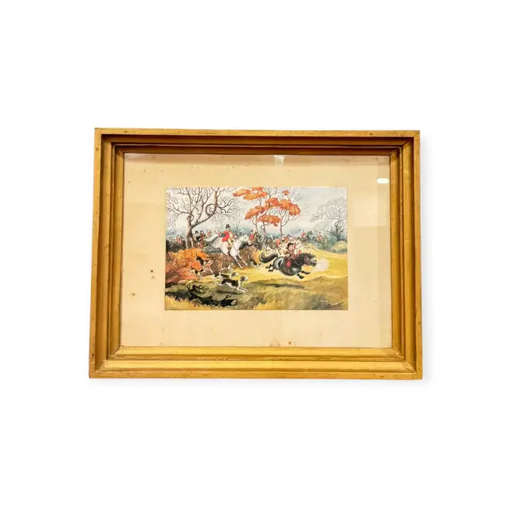
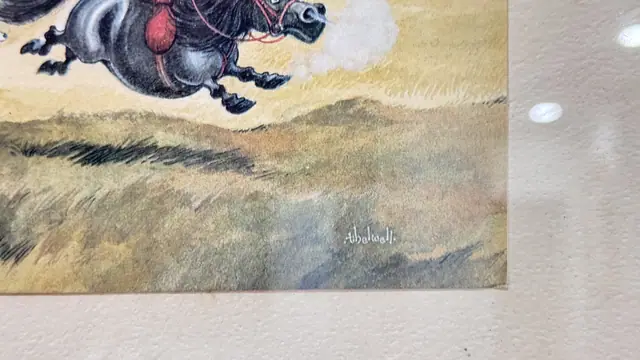

Paintings & Prints
Comic Fox Hunt Scene After Thelwell, Signed, Framed
Thelwell · mid to late 20th century
Price Upon Request


About the Item
Thelwell. A humorous hunting scene drawn in fine pen line and washed with transparent colour. Riders in scarlet coats and black caps stream out of a bare winter copse behind a pack of hounds, while in the foreground a small child in black clings to a fat, wide-eyed piebald pony that is charging off in the wrong direction. Autumn foliage in burnt orange marks the centre of the composition against a pale grey sky, and the ground is worked in soft ochre and olive. The image is a small sheet floated on a cream mat inside a plain gilt frame. Medium: colour offset lithograph on paper. Signed lower right within the image, in white, reading "Thelwell". Inscribed on the reverse or mount: Thelwell. Condition: Scattered brown foxing spots across the cream mat, heaviest near the upper left and lower centre; the printed sheet itself looks clean. Frame gilding is rubbed at the corners.
Details
- Creator:
- Thelwell
- Creation Year:
- mid to late 20th century
- Dimensions:
- Height: 12.5 in (31.75 cm)
Width: 15.75 in (40.01 cm)
outside of frame - Medium:
- colour offset lithograph on paper
- Period:
- 20Th
- Condition:
- Offered in the condition shown in the photographs.
- Reference Number:
- VO-76
- Documentation:
- no certificate photographed
- Gallery Location:
- Thelwell